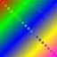

<!doctype html>
<html lang="en">
<meta charset="utf-8">
<meta name="viewport" content="width=device-width, initial-scale=1">
<title>compileImage static build</title>
<style>
  body { margin: 0; color: #18232d; background: #f4f6f8; font: 16px/1.5 system-ui, sans-serif; }
  main { max-width: 960px; margin: 32px auto; padding: 24px; }
  img { display: block; max-width: 100%; height: auto; border-radius: 12px; }
</style>
<main>
  <h1>compileImage static build</h1>
  <p>Actual widths: 64 px. No upscaling.</p>
  <picture>
    
  </picture>
  <p><a href="images/manifest.json">Compiler manifest</a></p>
</main>
</html>
